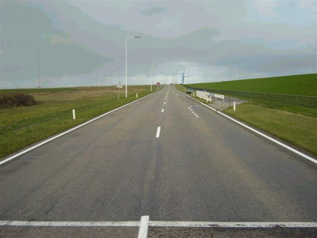
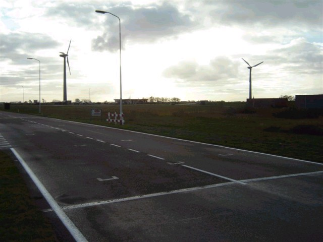
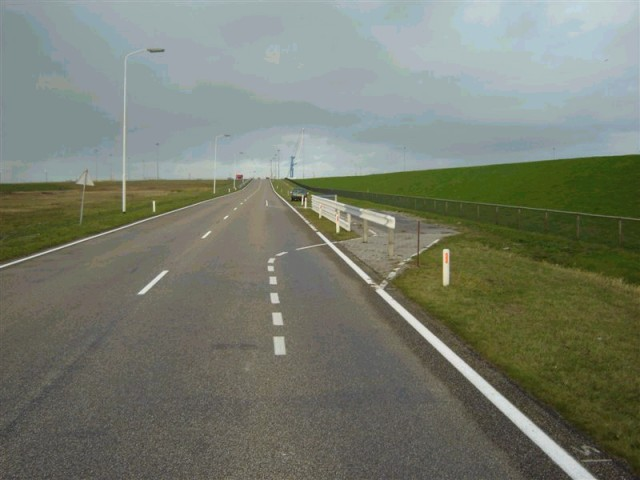
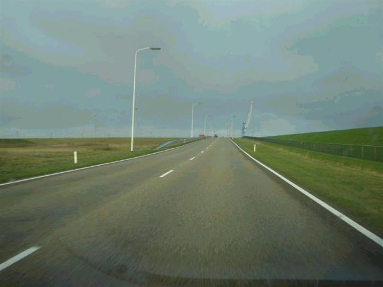
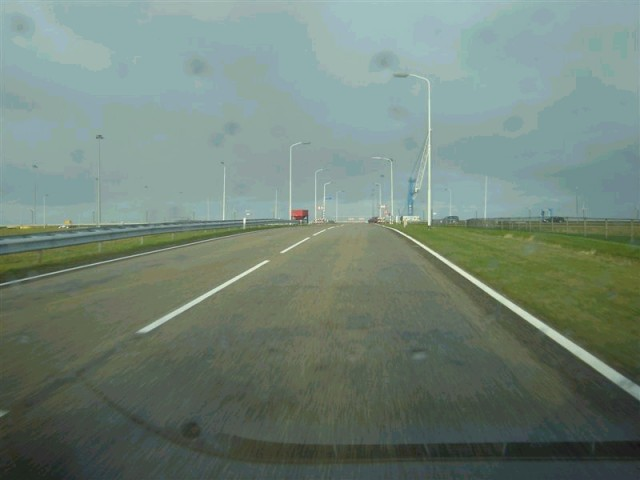

Numbers and arrows on the map represent the location and direction in which the photos were taken. Click the hyperlinks above to view the photographs.
Eemshaven - Westereemsweg (Start/Finish to Haven Bocht)
|| Contents | Westereemsweg | Ranselgatweg | Meeuwen Bocht | Meeuwenstaartweg | Hairpin | Kwedler ||
Numbers and arrows on the map represent the location and direction in which the
photos were taken. Click the hyperlinks above to view the photographs.
Return to racingcircuits.net's Photo Archive Main Index

1 - Start/Finish.

2 - The startgrid.

3 - The entrance of the pitlane.

4 - The pitlane.

5 - The exit of the pitlane.

6 - Towards the first corner. This goes
slightly up-hill.

7 - Just before the first corner.
Photographs and text ©Roelard Smit. Reproduced here with kind permission.